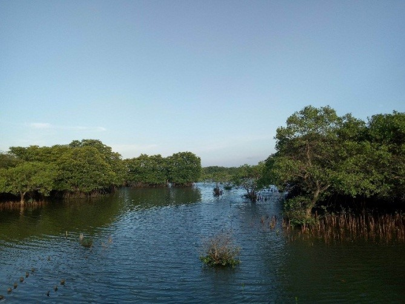
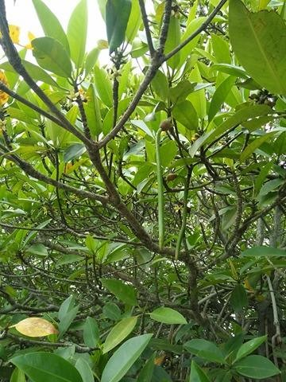
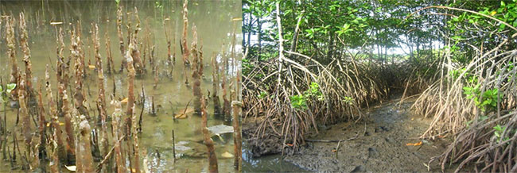
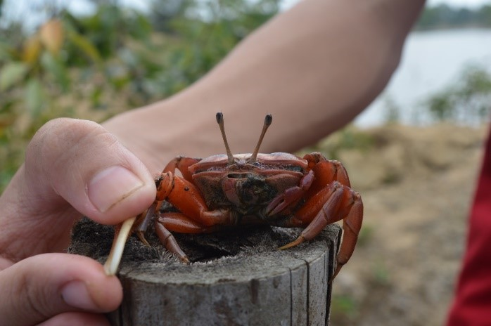
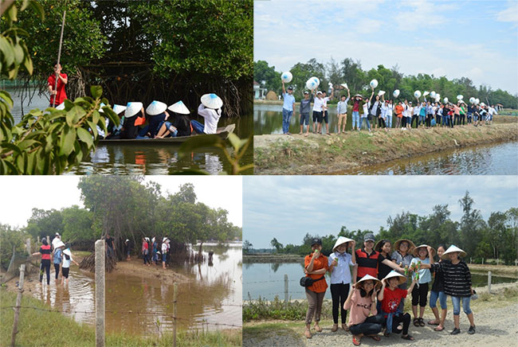

Học với thiên nhiên hiện thực hóa các bài giảng lý thuyết là một yêu cầu đặt ra trong đổi mới phương pháp dạy học

Lần cập nhật cuối lúc Thứ sáu, 08 Tháng 6 2018 09:09 Viết bởi Administrator Thứ sáu, 08 Tháng 6 2018 08:48
Hiện thực hóa các bài giảng lý thuyết là một yêu cầu đặt ra trong đổi mới phương pháp dạy học. Ngày 24/5/2018 vừa qua, các thầy cô giáo tổ Sinh học trường THPT chuyên Nguyễn Bỉnh Khiêm đã tổ chức một chuyến đi dã ngoại thực tế thiên nhiên cho học sinh chuyên Sinh lớp 11 tại rừng ngập mặn Vũng Lấm, xã Tam Anh Bắc - một trong những khu rừng ngập mặn hiếm hoi còn sót lại ở tỉnh Quảng Nam.
Chuyến đi thực tế "Tìm hiểu đa dạng sinh học của hệ sinh thái rừng ngập mặn ven biển" nhằm mục đích giúp học sinh đánh giá sự đa dạng sinh học ở rừng ngập mặn và hiểu rõ hơn về mối quan hệ giữa sinh vật và môi trường sống.
Rừng ngập mặn là một trong ba hệ sinh thái biển (cùng với rạn san hô và thảm cỏ biển) đóng vai trò quan trọng đối với môi trường sống như điều hòa khí hậu, lọc nước, chống xói mòn đất, chắn gió, chắn sóng ... Đây cũng là cái nôi nuôi dưỡng nhiều loài động vật (cá, tôm, cua), lưu giữ nguồn tài nguyên (gỗ, cây thuốc) phục vụ cho đời sống con người. Tại đây, các học sinh lần đầu được lội bùn ra quan sát cây, xem ngư dân bắt tôm, cá và trực tiếp đối chứng những gì quan sát được với các kiến thức đã học trong sách vở.

Hình 1. Rừng ngập mặn ở Vũng Lấm – Tam Anh Bắc
Để thích nghi với điều kiện ngập mặn, các cây ngập mặn đã có rất nhiều biến đổi độc đáo như: hiện tượng “thai sinh” – “cây đẻ con”, rễ lại mọc ngược lên trời v .v.. Một hệ sinh thái không chỉ đa dạng về thực vật mà hệ động vật cũng hết sức phong phú.

Hình 2. Hiện tượng “thai sinh” - Trụ mầm cây đước đôi Rhizophora apiculata

Hình 3. Rễ thở mọc ngược lên trời của cây bần trắng Sonneratia alba (bên trái) và rễ chống cây đước đôi Rhizophora apiculata (bên phải)

Hình 4. Con còng (cáy) – sinh vật sống chủ yếu trong rừng ngập mặn.
Trước đây, Vũng Lấm có diện tích rừng ngập mặn khá lớn và đa dạng với hệ thực vật ngập mặn, lợ, cỏ biển ... Tuy nhiên đến nay diện tích rừng ngập mặn bị thu hẹp lại mà nguyên nhân chính là do sự phát triển kinh tế địa phương theo kiểu tự phát, người dân khai hoang để nuôi tôm. Rừng ngập mặn bị tàn phá đã gây ảnh hưởng đến sự bền vững môi trường sinh thái, mất tính đa dạng sinh học. Do đó, mỗi người dân chúng ta hãy cùng nhau bảo vệ và khôi phục rừng ngập mặn; khai thác tài nguyên nơi đây một cách hợp lý để bảo vệ môi trường sống cho các loài sinh vật cũng như bảo vệ cho chính loài người chúng ta.

Hình 5. Một số hình ảnh của SK15.
Bài viết: Cô Nguyễn Thị Nương - Tổ Sinh học
- 23/01/2019 10:35 - Thông báo đăng ký cuộc thi Olympic Vật lý du học N…
- 26/12/2018 14:27 - Thông báo tổ chức kì thi AMC10-12 năm 2019
- 02/12/2018 00:00 - Kế hoạch tổ chức cuộc thi đường lên đỉnh Olympia 2…
- 12/09/2018 10:07 - Trường THPT chuyên Nguyễn Bỉnh Khiêm khai giảng nă…
- 24/08/2018 08:31 - Chỉ thị về nhiệm vụ chủ yếu năm học 2018 - 2019 củ…
- 21/02/2018 10:15 - Kế hoạch và Nội quy Hội trại Khát vọng Nguyễn Bỉnh…
- 29/12/2017 09:43 - Nghiên cứu sinh Phạm Thị Huyền – Phó Hiệu trưởng b…
- 17/12/2017 20:58 - Trường THPT chuyên Nguyễn Bỉnh Khiêm và Trường Đại…
- 02/12/2017 08:21 - KỶ NIỆM 35 NĂM NGÀY NHÀ GIÁO VIỆT NAM 20-11 THPT C…
- 24/11/2017 07:41 - Phát động tham gia hưởng ứng Cuộc thi Những tấm gư…